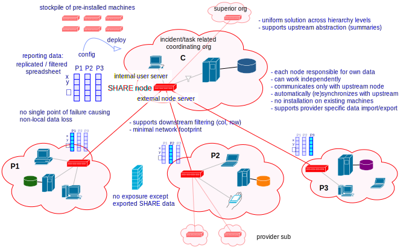
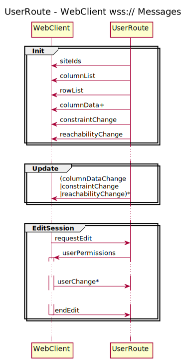

SHARE - System for Hierarchical Ad hoc Reporting
SHARE is a set of actors and other classes to build RACE applications which distribute and synchronize data across a hierarchical network of SHARE Nodes (RACE processes). While many of the other RACE modules target import and analysis of external data streams such as live airspace data, SHARE can be thought of as extending RACE towards distribution of discrete event data between RACE applications.
There are many systems for data synchronization and replication in tightly connected networks. What sets SHARE apart from a networking perspective is that it treats peer nodes as untrusted (avoiding direct communication between them) and regards the network itself (i.e. connectivity) as a critical resource that can fail at any time. Both constraints can be effectively addressed by making explicit use of a hierarchical (tree) network with clear data-ownership separation between nodes. This is typically satisfied by existing organizational structures that are based on hierarchies.
A second novel aspect is that SHARE assumes a variable data model and number of participating nodes. Both can change at runtime without disruption of ongoing operation.
SHARE tries to strike a balance between a production system that only needs configuration to be turned into
a concrete application, and between a platform to experiment with synchronization protocols for distributed systems.
SHARE classes are located in the race-net-http module within the gov.nasa.race.http.share package.
Use Case
The primary use case is to establish task- or incident specific situational awareness across several participating organizational entites (providers) that are normally not tightly integrated, i.e. don't have a mechanism in place to automatically share (a flexible, task specific subset of) their internal data.
This use case is typical for large scale disaster management.
While not essential it is assumed these providers form a hierarchical network with several layers (e.g. county, state and federal), resulting in two-fold synchronization needs:
- distribution within a layer (potentially with provider-specific fltering)
- upstream reporting of data computed from this layer (potentially with layer-specific filtering)
It is further assumed that providers already have their local networks and data bases in place, and those are intentionally kept private (e.g. for security reasons). Any data sharing with other providers and upstream layers should:
- have minimal impact on existing provider networks (should not require new/changed software on exisiting machines)
- allow flexible, provider-specific configuration of what data is shared with other providers
- be robust against network partitioning, i.e. continue to work within each network partition and re-synchronize upon restored connectivity
- support both discrete event data (e.g. counters) and streams (e.g. video or telemetry)

Existing solutions range from slow and error prone manual update to expensive and inflexible distributed data bases. The most common approach is to provide a per-layer web server, which consitutes a single point of failure, does not support automatic import from existing provider data bases and does not scale across several hierarchy levels.
In this use case we mostly target ad hoc disaster response, i.e. on-demand reaction to unforeseen or variable situations that involve already established organizations and systems. This implies that deployment and use of any new systems should be as non-disruptive/-intrusive as possible as participating organizations and related infrastructure are already under stress.
We assume medium data set sizes (10-100 fields) and low update rates (<0.1 Hz). Larger volumes could be represented as stream URIs (e.g. for telemetry streams).
SHARE Approach
The SHARE approach to support this use case is to form an overlay network of dedicated SHARE nodes (henceforth called nodes) that:
- represent the reporting network topology (tree)
- integrate with minimal impact into the existing provider network, i.e. can be deployed and removed without affecting operation of existing provider systems
- can act as web/application servers within the provider network to support (authenticated) end user interfaces
- run the same software that is configured with network- and shared data specifications

Each layer consists of a single coordinator node (at a time) and multiple provider nodes. Both coordinator and providers can change during operation. The primary role of a provider node is to update its own data and report changes to the upstream coordinator. The role of the coordinator is to distribute data changes to the other provider nodes and potentially report to its own upstream coordinator. Each node monitors its connectivity status and synchronizes with other nodes upon (re-)establishing connectivity.
The simple tree topology of SHARE networks is a deliberate choice to minimize the need for dedicated network infrastructure and configuration. It is assumed that participating organizations often use public networks to communicate with each other, and already established private networks internally. Although SHARE can support more complex topologies it is supposed to work in a minimal networking environment where each provider only has to know the IP address of its upstream coordinator, and communication between nodes can take place over untrusted networks using well known protocols and ports (https, i.e. with host authentication and encryption).
Although this is just a conceptual model (the underlying implementation is a more general key/value store), the basic SHARE data model can be viewed as a replicated, distributed spread sheet where each node owns one or more columns, and each row is uniquely identified and typed.
Nodes can change their data in four different ways:
- by manual entry via the user interface (through the provider-internal web server of the node)
- (potentially) by automated import from existing provider systems/data bases
- value triggered computation (i.e. if other local or remote data changes)
- time triggered computation (e.g. for periodic reporting)
While every node is responsible for its own data, it is assumed that at least some fields can also be updated by the upstream coordinator. This is mostly to allow for provider-specific goals that are set by the upstream organization, and as a backup in case a provider becomes disconnected and has to report updates through alternative communication channels. Nonetheless, in addition to keeping timestamps for every data change there is a clear priority order of potential change sources that can be used to resolve conflicts.
Tracked data (rows) can change during operation without requiring to restart nodes or otherwise interrupt operations.
Anatomy of a SHARE Node
Nodes have a uniform design that reflects their four major functions:
- upstream reporting (if this is not a terminal coordinator)
- downstream data distribution (if this is a coordinator node)
- user server (data-display and entry)
- (potentially) automated provider server data import

The communication with upstream and downstream nodes uses the same message protocols and formats for all SHARE applications: a set of JSON messages transmitted over WebSockets. Although RACE directly supports Remote Actors this more abstract approach was chosen so that SHARE nodes have a well defined interface allowing alternative, possibly provider specific implementations (e.g. not using RACE/Akka/Scala running on a JVM).
The user server is a normal HttpServer that has the function to support data display and entry to/from existing provider devices such as desktops, laptops and tablets. While RACE/SHARE comes with a generic web application that runs on normal web browsers (i.e. is end-user installation free) the HttpServer can be configured with additional routes to support provider and device specific access to SHARE data. This is one of the potential SHARE extension points. Special emphasis is given to end-user installation free clients, i.e. browser-based clients that do not require any modification to existing end user devices.
Import from and export to provider servers is highly provider specific. While there are no generic SHARE actors (yet) to support this function this can make use of RACEs extensive Data Import and Export Infrastructure. This is the second provider specific extension point.
It should be noted that while SHARE nodes can be extended in such provider specific ways there is no need to create these extensions upfront - SHARE has enough generic components to be used off-the-shelf. The main goal here is to lower the barrier of adoption by not requiring any software development prior to deployment, but at the same time enable incremental extension should a provider choose to opt for more automation and customization at a later point.
What has to be created prior to deployment of SHARE nodes is application specific configuration in form of text files containing JSON data. Namely, each node is configured with a:
- NodeList (participating providers and potential coordinators)
- ColumnList (data ownership of providers)
- RowList (types and identifiers of shared data sets)
SHARE ultimately will support hot-swap of any of these configuration files, i.e. replacement without affecting ongoing
operation. Examples of those lists can be found in race-net-http-test/src/resources/sites/share.
What is not reflected in the four mentioned external interfaces is the central component of each SHARE node - an actor that performs all mutations of the node data and triggers outgoing communication by publishing respective data changes. With that the actor schematics of a SHARE application take the following shape:

Data Update Semantics
The three semantic aspects of the SHARE data model that warrant further analysis are field value conflict resolution, spatial (horizontl/vertical) variation and temporal variation.
Conflicts
Since the primary purpose of SHARE is to support data replication it is essential to make sure conflicting values on different nodes do not lead to unspecified system behavior. The concept of a Conflict Free Replicated Data Type (CRDT) is therefore central to the SHARE data model.
The reference data model assumes there is a clear update prioritization for each data set (column) and field (row). In most cases this means that each data set (column) has a dedicated owner/producer from which values are synchronized across the network, with the possible exception of goal fields that are set by upstream organizations (i.e. taken from the coordinator node).
In addition, each field value update is associated with a time stamp. Although this time stamp can also be used to resolve (prioritize) conflicting updates during data synchronization, this should be reserved for special cases in which race conditions are not of concern.
Spatial Variation
The second formal aspect of the SHARE data model is horizontal and vertical variation.
Horizontally, not every node has to see each of its peer nodes, and even for visible nodes there can be fields that should be hidden.
Vertically, the information needs of hierarchy layers usually differ. Usually there are more details at the bottom layers, and more abstraction towards upper layers. This means a mid-layer coordinator probably reports different data upwards than it distributes downwards between its provider nodes.
SHARE supports horizontal and vertical data model variation by means of filters that can be attached to both data sets (columns) and fields (rows). The governing principle is that each SHARE node is responsible for selecting which external change it accepts, and which internal changes it sends to up- and/or downstream nodes.
Temporal Variation
Data sets and node lists might change during operation. SHARE uses dedicated lists (NodeList, ColumnList, RowList) so that respective information is not hardcoded but configured, and configuration can be replaced during runtime.
This also needs to be backed up by data stores (ColumnData collections) that support missing/default values and that are only accessed by the rest of the system through abstract interfaces providing hot-swap capabilities.
User Clients
User clients are not the main focus of the generic SHARE infrastructure in RACE as they are usually domain-, device- and provider- specific. In order to demonstrate basic use of the system SHARE comes with a generic browser application that implements a view resembling a spreadsheet, with added connectivity status and (authenticated) data editing/publishing:

The respective HTML and Javascript assets can be found in race-net-http/src/main/resources/sites/share.
The main functionality is in js/app/share.js, which communicates with the UserServerRoute via a web socket
to obtain and update the data, which happens through the exchange of a number of JSON messages that implement
the user client protocol.
This protocol is intentionally kept simple and generic to accommodate future provider- and device- specific clients
by just exchanging the static assets in UserServerRoute.
Security Aspects
SHARE considers the following security threats
Leaks of private provider data
The motivation for SHARE is that relevant organizations usually have deliberately separated and insulated data bases. A primary concern for adopting organizations is therefore that no private data can leak through SHARE nodes to the outside world. SHARE mitigates this by separating its own data model and store from the organization data base. Each SHARE node only stores and processes what is defined in its own configuration, it does not execute any remote code or generic requests. Import from and export to organization data bases is provider specific and has to be added by that respective organization, i.e. will be subject to internal regulation and reviews. Potential import/export components are actors - separate code units with well defined interfaces to the rest of the system that lend themselves naturally to security audits.
Leakage of sensitive provider data that is mapped into the SHARE data model is prevented by restricting SHARE node interfaces. SHARE nodes are supposed to be dedicated, access controlled machines that only have two server functions - to known and authenticated SHARE nodes outside of the organizations network, and to user devices inside of the organization (i.e. within a trusted and access controlled network).
Both node- and user- server components can make use of https to provide host authentication. In addition, both server components and the upstream connector can be configured to connect only to known IP addresses.
Untrusted networks
Inter-node communication in SHARE can use untrusted networks. SHARE nodes are usually configured to use https for
all external communication and therefore can assume both host authentication and strong encryption of transmitted content.
SHARE nodes do not have any public server function - the only communication with the outside of the organization takes place with a closed set of well known other SHARE nodes. Organization firewalls can be easily configured to reflect such limited and a-priori known connections. Since there are no public services the only DoS attack vector is a compromised SHARE node.
Compromised SHARE node
SHARE nodes are dedicated machines with no direct user interaction, they are operated in an access controlled
environment. Should a node become compromised it can be easily isolated by upstream and downstream nodes, e.g. by
putting caps on data volume and by counting receive filter rejections. The UpdateActor also supports automatic
data constraint checks to safeguard against malicious or accidental data corruption.
Un-authorized user access
User access only happens from within the provider network. The user server ensures authentication for AuthRaceRoute
derived routes, which is performed by a configured Authenticator object. The primary implementation for this
interface is the WebAuthnAuthenticator which supports password-less user authentication according to the W3C
WebAuthn standard. Apart from providing better protection than user provided passwords (no shared secrets stored on
client and server) it also avoids the vulnerable server infrastructure to reset forgotten or compromised passwords.
Both user registration and authentication can be configured to specify valid sub-networks. This also allows to restrict (one time) user registration to the SHARE node itself, which can be used to physically verify user identity and hand out authenticator devices (such as fingerprint readers) from within an access controlled environment.
With respect to data update SHARE goes beyond route protection. The user server only accepts data changes for authenticated users who have an active edit session, which has to be explicitly requested and results in selecting a user permission profile. This profile is sent to the client and limits the fields that can be edited through the client user interface. Once the client sends back the changed values the server checks them against the active profile for the respective user. Edit sessions without user interaction expire after a configurable timeout.
Main Implementation Constructs
Since SHARE applications make heavy use of the HttpServer and respective web socket support the SHARE specific
code is located in the race-net-http module within the gov.nasa.race.http.share package. Tests and example
data can be found in race-net-http-test.
The main classes representing the generic SHARE data model are Node and NodeList, Column and ColumnList,
Row and RowList, CellValue and ColumnData:

- NodeList
- defines the network as it is seen by the node. This includes the own node name, a list of potential upstream nodes (of which the first responsive one is chosen), a list of peer nodes and a potential list of downstream (child) nodes for which this node acts as the coordinator.
- Column
- is an entity that describes data ownership of nodes and associated incoming/outgoing update filters, i.e. from
which other nodes respective
ColumnDataChangesare accepted and to which nodesColumnDataChangesare sent. Each column has a unique identifier. - ColumnList
- is the configuration object for
Columnswhich is initialized from a textual (JSON) specification. - Row
- is an entity that describes a data field, which includes a unique identifier, an (implicit) field type such as
integer or real, and optional send/receive update filters that can be applied on top of the ones specified for
respective
Columns.Rowis an abstract class with a number of field type specific implementations. As such it is a extension point of SHARE, albeit not a primary one since it does require providing/changing a number of related constructs (especially in the context ofFormula/CellExpressionsupport, i.e. scripted field updates). - RowList
- is the configuration object for
Rowsthat is initialized from a JSON specification. - CellValue
- contains the (typed) data value of a column/row cell and the time stamp of its last change.
- ColumnData
- holds an immutable map with defined
CellValuesfor a givenColumnand the time stamp of their last changes. This is the per-column key/value store that holds the live data. - Node
- is an immutable aggregation of the aforementioned data and the main product published by the
UpdateActor. It holds all the information upon which the other actors (UpstreamConnectorActor, NodeServer and user server) rely for their operation.Nodemakes heavy use of Scala's time- and space- efficient implementation of immutable data types in order to scale to a high update volumns.Nodeinstances are never sent out to other nodes, they are only published inside of a NODE as simple reference values. This implementation was chosen to avoid initialization state in receiving actors - aNodeobject holds a consistent snapshot of all static and dynamic data such actors process.
The primary SHARE messages are NodeDates and ColumnDataChange:
- ColumnDataChange
- this is the central event type that triggers update of the node data model. Is used to report such changes to
other actors, nodes and user clients.
ColumnDataChangeobjects contains the originating node, the time stamp and the set of changedCellValues. - NodeDates
- is a snapshot of all data time stamps of a node. For non-owned columns this is just the single
ColumnDatatime stamp, for owned columns this includes eachCellValuetime stamp of respectiveColumnDatas. This message is used to synchronize SHARE nodes.
Key actors of SHARE are the UpdateActor, the UpstreamConnectorActor and the ``HttpServer``_:
- UpdateActor
- this is the sole component that is responsible for updating the node internal data model, which creates and
publishes new
Nodeobjects (representing a snapshot the complete node state), followed by respectiveColumnDataChange(CDC) objects that specify the deltas that caused the node state change. This can be triggered by CDCs received from the upstream or downstream nodes, by CDCs reveived from provider server import actors or the user server (interactive data entry), or by value- or time-triggered formulas that are managed by the UpdateActor.

- UpstreamConnectorActor
- connects to the
NodeServerof the upstream node through a websocket, hence it is derived fromWsAdapterActor. Apart from receiving external CDCs (which are forwarded to theUpdateActor) and reporting own CDCs (received from theUpdateActor) its main purpose is to track the upstream connectivity status and initiate/process data synchronization once connection to the upstream is (re-)established. - NodeServer
- is the coordinator node counterpart of provider
UpstreamConnectorActors. This is just anHttpServerthat keeps track of the currentNodestate (received from theUpdateActor) and normally uses a singleNodeServerRoutethat implements the downstream communication.
Since the generic HttpServer delegates application specific communication to configured RaceRouteInfo objects,
SHARE provides the following routes:
- NodeServerRoute
- this represents the URL provider node
UpstreamConnectorActorsuse to connect to their upstream coordinator, which maps straight into a web socket that implements the respective coordinator/provider protocols. While there can be several provider-specific routes this is a less likely extension point thanUserServerRoute. - UserServerRoute
- is the extension point for different user clients - each route maps to a device-specific application such as a generic browser HTML document, which upon load opens a web socket to the user server that is responsible for data update.
Protocols
As mentioned above SHARE is also used as a platform to test synchronization protocols for distributed systems, hence this collection will be extended in the future so support more specialized applications/use cases. Off-the-shelf there are two protocols included for
- node (re-)synchronization (implemented in
NodeServerRouteandUpstreamConnectorActor) - user client synchronization (implemented in
UserServerRouteandshare.js)
Node Synchronization
This protocol is initiated by the downstream node when it detects a working connection to the upstream coordinator,
which either happens during start of the downstream node or after a previously lost connection got restored. It starts
with the downstream node sending its NodeDates, to which the upstream node responds with zero or more
ColumnDataChanges for its ColumnDatas that have newer fields. This is followed by sending the upstream
NodeDates, which in turn tells the downstream node which if its ColumnDatas are newer (usually the ones
owned by the downstream node) and have to be sent back as ColumnDataChanges.
The challenge for this simple protocol is that neither upstream nor downstream node should be blocked while the synchronization takes place, i.e. both nodes potentially process interleaving changes from other sources (e.g. downstream from user clients and upstream from other online child nodes). While this protocol could be run in cycles until a fix point is reached or an endless update loop is detected, data ownership rules and time stamps should avoid this for all but statically detectable cases (e.g. when a change of the sending node triggers a formula in the receiving node that causes an endless loop when respective changes are sent back). Loop detection at runtime is not yet implemented.
User Client Synchronization

This mostly uses the same JSON messages as inter-node synchronization to initialize and update the user client. The specific part is the client-initiated field update, which has to support user authentication and hence requires a timeout-limited edit mode that is tracked both in the user client and the UserServerRoute.
It begins with the client sending an edit request containing a user id, which in all but access constrained environments will in itself trigger an embedded user authentication protocol (SHARE supports and promotes the W3C WebAuthn standard using authenticator devices).
If the authentication is successful the server sends back a permission profile, which tells the client which fields can be edited by the user and starts a timeout-limited edit mode in both client and server. User changes do update the timeout but do not end the edit session, to allow for bulk changes. The server rejects user changes that are received after the timeout and informs the client accordingly.
Coordinator Selection
Not yet implemented is a protocol for (re-)selection of a coordinator node - currently a provider node just chooses the first responding coordinator from its node list, which can result in permanent partitions of a SHARE network (providers using different coordinators).
There are known leader election algorithms for coordinator candidates such as the Raft Consensus Algorithm but care must be taken to meet connectivity constraints such as to avoid fully connected networks over all SHARE nodes (which would require provider nodes to communicate with untrusted peers).
Although it does not cause data loss or disruption of local service in disconnected network partitions, the coordinator is still a single point of failure that will need to be addressed in order to increase robustness of a SHARE network.
Future Directions
SHARE serves a dual role as a production framework and a testbed for distributed systems. For that reason current
configuration formats (e.g. for NodeList) support a superset of the current functionality. The following extensions
are currently planned:
Coordinator election protocol for partitioned trees - to sync between live coordinators. This is an adaptation of *the node synchronization protocol that replaces column ownership with node-reachability, based on that each provider *node only uses one coordinator at a time (i.e. partitions are stable)
Dynamic row types - extending the generic data model towards streams for dynamic entity collections such as track lists
Hardcoded data model - high volume/low latency import/export actors might benefit from accessing fields through
references instead of symbolic IDs. Those hardcoded models can be encapsulated in derived/specialized UpdateActors
Alternative user clients - the current generic browser client is probably the most likely replacement candidate in production systems. Apart from a ScalaJS based implementation (to avoid polyglot programming) a Flutter client is planned as an example for vendor-independent mobile device support
Independent of such functional extensions we intend to create formal specifications, security-/safety- cases and separate user documentation for SHARE.